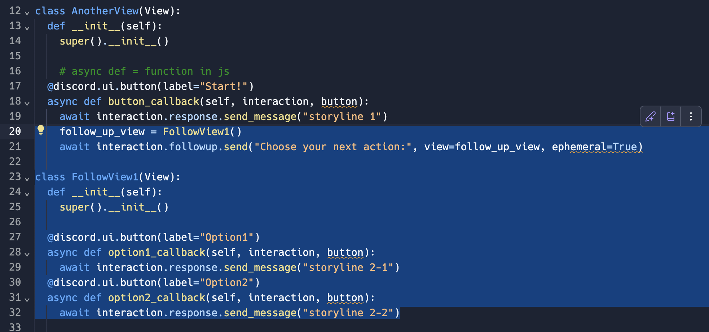
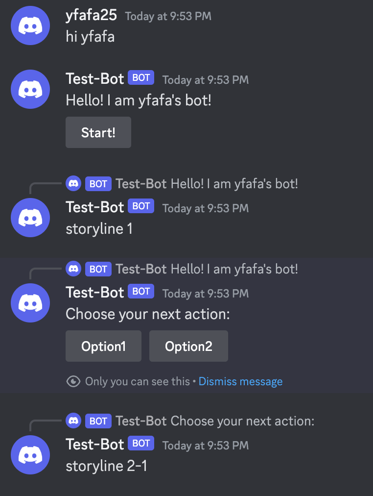

Project 2: Chatbox
Week 1: UI explorations
Based on the first week's class, I continued to explore some possibilities generated by the interface built with buttons. I built an interactive storytelling game where one can have some options after reading a clip of a story.
To trigger another two buttons after one option has been selected, I created new classes to hold the new UIs and added them into the response of the previous ones
This is what it returned:
By keep adding layers of the story and the choices, the interaction process was expanded. Interestingly, some of the storylines were automatically generated by replit, similar to how it autofills the code. I kept some of the story although sometimes it made the story with no sense, but it is fun.